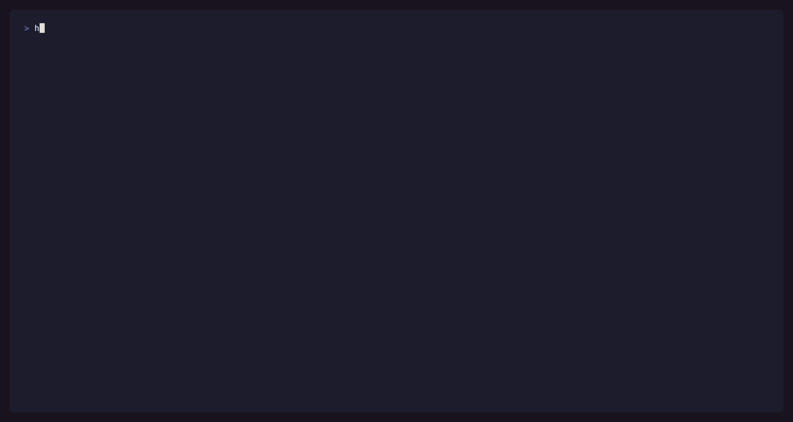
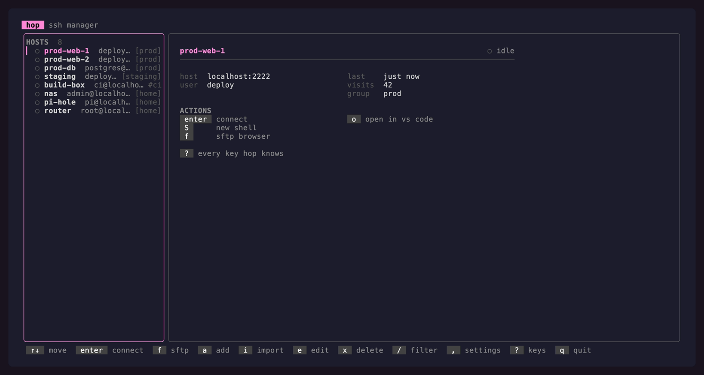
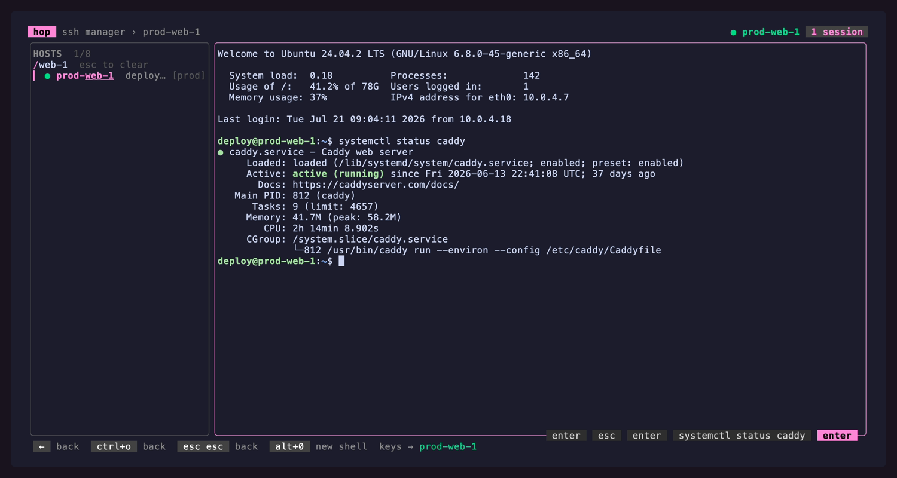
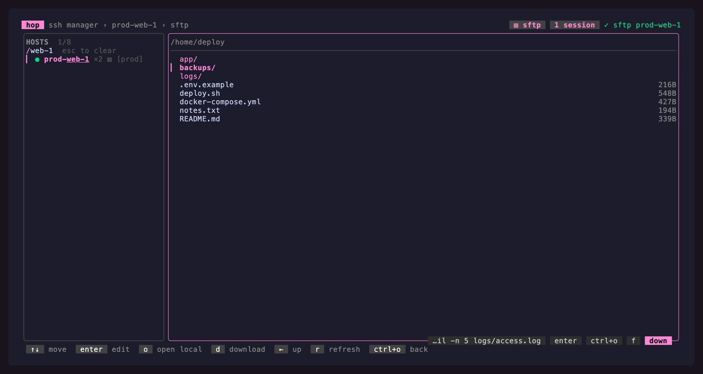
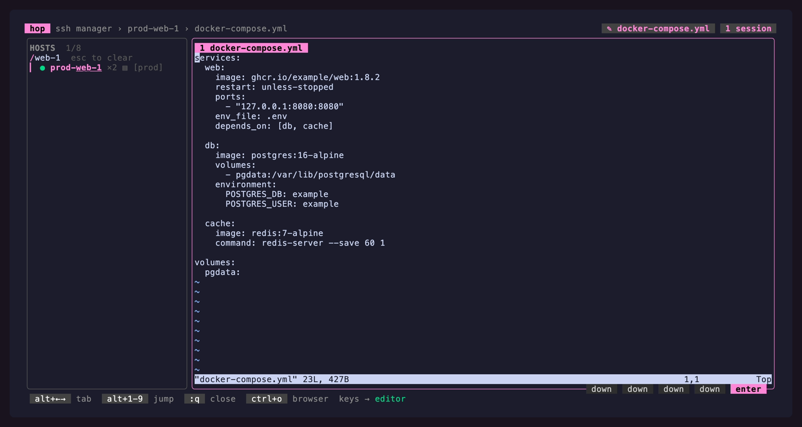
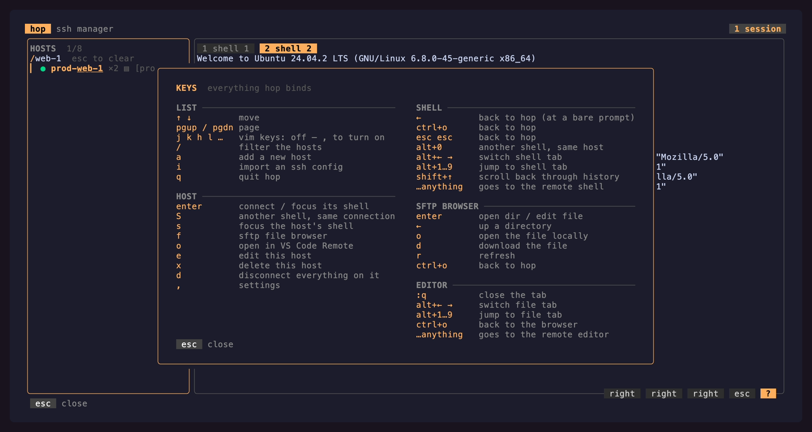
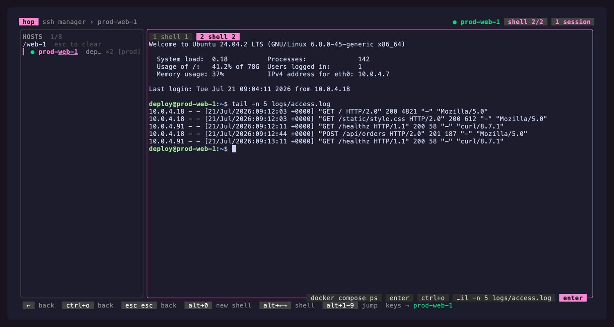
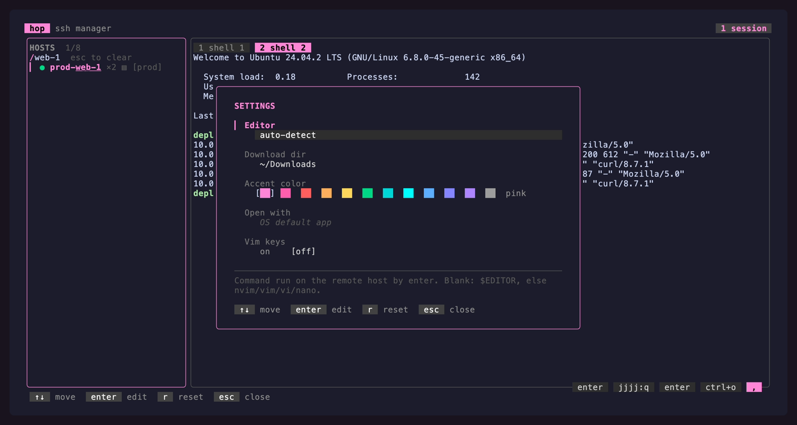

SSH launcher · terminal UI · single binary
Hop from server to server without ever leaving your terminal.
One keypress and you're in a shell. One more and you're browsing its files. One more and you're editing one on the box, in a tab, beside all the others. Then hop to the next host and everything you left behind is still exactly where you left it.

tools/demoserver) with a HOME of its own.What hop is
hop is a terminal UI over your SSH fleet. It holds one connection per host and opens everything else as extra channels on that same connection: more shells, an SFTP browser, an editor running on the remote box, and any tunnels you defined. Nothing is a new window, nothing re-authenticates, and leaving a pane never tears down what is inside it.
A status bar above the footer always tells you where you are and where your keystrokes are going — the host, the mode, the directory or file, and the machine behind the alias. That is the single most disorienting thing about a TUI that embeds other people’s programs, so it gets permanent screen space, directly above the keys that act on it.




:w writes the real file.Features
🖥️ Embedded SSH shells
Real terminals in a pane: a pure-Go SSH client (x/crypto/ssh) feeding a real VT emulator (x/vt). Agent or private-key auth, resize, cursor, the lot.
🔑 2FA and passwords
A card appears the moment the host asks. Nothing is stored, and one prompt per host covers everything riding that connection.
🗂️ Multiple shells per host
S opens a second channel on the connection you already have — no new handshake, no second auth.
📁 SFTP file browser
f browses the remote filesystem over that same connection. Download with d, open locally with o.
⇄ Local & remote tunnels
Define forwards per host with T, start and stop them with t. Imported from your SSH config, restored on reconnect.
🛰️ ProxyCommand & ProxyJump
Bastions and brokers (aws ssm, cloudflared, gcloud) work exactly as your SSH config describes them.
✎ Remote editor tabs
enter on a file runs $EDITOR on the server in a tab. No download — :w writes the real file.
📂 VS Code where you are
ctrl+o c opens VS Code Remote in the directory the shell is standing in, tracked over OSC 7.
🏠 A directory to land in
Give a host a default directory and every session on it starts there.
⇅ Scrollback
shift+↑ pauses a shell into its history, with vim-ish paging.
🔁 Reconnect after a drop
Drops are noticed, the last screen is kept, and r puts the shells, browser and tunnels back.
🔐 Honest host keys
An unknown key aborts the dial and shows a fingerprint card. A mismatch is always a hard error.
📥 SSH config import
i syncs hosts from ~/.ssh/config — a re-import refreshes, hand-added hosts are left alone.
🔎 Fuzzy find
/ filters as you type, with the matched characters picked out so a surprising hit explains itself.
🖱️ Mouse
Wheel, click and drag-to-copy everywhere; remote programs that want the pointer get it verbatim.
📋 Copy and paste
Bracketed paste (even on Windows), drag to copy, and remote yanks (OSC 52) land on your clipboard.
⚙️ Live settings
, — editor, download dir, accent colour, vim keys, mouse, remote clipboard. Applied on the spot.
🎯 Frecency ordering
The hosts you actually use float to the top of the list.
🪟 Cross-platform
Static, dependency-free binaries for Windows, macOS and Linux (amd64 + arm64). No cgo, no libc, no runtime.
⌨️ Opt-in vim keys
Off by default. Flip one switch and the motions appear everywhere at once.
The longer version of a few of these
2FA. The dial waits inside the handshake rather than restarting — a one-time code is only good once. One prompt per host, since shells, SFTP, editors and tunnels ride the same connection.
ProxyCommand. The command runs without a shell: a line needing one is refused with a
clear error, so an imported config cannot smuggle in sh -c. %h %p %r %n are
expanded. A ProxyJump may name another hop host by alias and borrows its user, port and key.
OSC 7. hop installs the prompt hook into bash/zsh itself — one line typed at the first prompt, then wiped from the pane, so the session looks untouched. Nothing is typed into a shell that already emits OSC 7, or while a full-screen program owns the screen. Where no directory can be learned, the key still opens the host in its default directory and says so.
Reconnect. Drops are found with keepalive probes rather than silence, so a suspended laptop or a dead VPN does not leave a pane quietly frozen.
Install
Grab the archive for your platform from the
latest release and put hop somewhere on
your PATH.
# macOS / Linux
tar -xzf hop_*_darwin_arm64.tar.gz
sudo mv hop /usr/local/bin/
# Windows
Expand-Archive hop_*_windows_amd64.zip -DestinationPath .
# then move hop.exe onto your PATH
Every release ships a hop_<version>_checksums.txt, so you can verify with sha256sum -c.
From source
Needs Go 1.26+ and optionally just ≥ 1.39.
git clone https://github.com/p-arndt/hop.git && cd hop
just build # -> ./hop (or: go build -o hop .)
just build-release # stripped + version-stamped
Staying current
hop check-update # is there a newer release?
hop self-update # download it, verify its checksum, swap this binary
self-update fetches the archive for your platform from the latest GitHub release, checks
its SHA-256 against that release’s checksums.txt, and replaces the running binary
atomically. On Windows the old hop.exe is renamed aside and swept up the next time hop
starts. Source builds (version = dev) are refused: there is nothing to compare them against.
hop also checks once a day in the background and mentions a newer version in the footer and
on the CLI. HOP_NO_UPDATE_CHECK=1 turns that off; the two commands above still work.
Quick start
hop # launch the TUI
On a first run with no hosts, hop offers to import ~/.ssh/config for you: one enter and
your list is full. Then, in the TUI: ↑/↓ to move, enter to connect, ctrl+o
o to come back out. That is the whole model.
CLI
For when you are already in a shell.
| Command | What it does |
|---|---|
hop |
launch the TUI |
hop import [path] |
sync hosts from ~/.ssh/config, or from another file |
hop add web1 deploy@10.0.0.4:2222 |
add a host by alias and target |
hop list |
print alias user@host:port |
hop check-update |
is a newer release out? |
hop self-update |
upgrade this binary in place |
hop version |
print the version |
Where things live
| What | Path |
|---|---|
| Host database | <config dir>/hop/hop.db (SQLite) |
| Settings | <config dir>/hop/config.json (plain JSON, hand-editable) |
| Update check cache | <config dir>/hop/update-check.json (last check + latest version seen) |
| Known hosts | your usual ~/.ssh/known_hosts |
| Platform | <config dir> |
|---|---|
| Windows | %AppData%\hop\ |
| macOS | ~/Library/Application Support/hop/ |
| Linux | ~/.config/hop/ |
A missing or malformed config file starts hop on defaults rather than refusing to start.
The three modes
Every mode returns to the host list — from a pane with ctrl+o o, from the browser with ctrl+o, and from either with a double esc inside 400 ms. In the list itself esc esc is the last level out: it quits hop.
Two rows along the bottom say where you are and what to press. The status bar carries the
place: the host, what you are doing on it, and the thing you are doing it to — the directory
a shell is standing in, the file an editor tab holds, the listing the browser shows — with
user@host:port and the tab count at its right-hand end. The footer below it is the key
legend, and it is deliberately short: it names the keys the mode cannot be worked without,
adds more as the window gets wider, and leaves the full table to ? (the
key card), which opens on the section for the mode you are in.
Nothing here has to be memorised first. space opens the action menu on the host under the cursor and ctrl+k the palette for whatever mode you are in — both list what is possible and the key that does it, and how much hop keeps on screen without being asked is one setting (see Guidance).
Everything else works in all of them: the sidebar toggle, the settings popover, the tunnels, the mouse and the optional vim keys.
Two rules explain most of the keyboard:
- Inside a pane, ctrl+o is hop’s leader. It does nothing on its own and it is on no clock — it opens a menu in the footer and waits. ctrl+o o goes out.
- Outside a pane — in the browser, in a card — ctrl+o simply goes back. There is no remote program competing for keys there, so there is nothing to lead.
- Inside a pane, everything else is the remote’s. hop reserves as few keys as it can, because every one it takes is one the shell or editor no longer gets.
Navigation mode
Navigation — the host list
| Key | Action |
|---|---|
| ↓ ↑ | move |
| pgdn pgup | a full page down / up |
| enter → | connect (opens a terminal pane), or focus the shell already open |
| esc ← | back — leave the details view |
| s | focus the existing session for this host |
| S | open another shell on this host, alongside the ones already open |
| 1 … 9 | go straight to that shell of the host under the cursor |
| f | open the SFTP browser |
| t | start all defined tunnels, or stop them when any are running |
| T | manage this host’s tunnel definitions |
| o | open the host in VS Code Remote, in the directory its shell is standing in |
| d | disconnect the session |
| r | reconnect a session whose connection dropped, reopening what it held |
| a e x | add / edit / delete a host (delete asks first) |
| p | pin the host to the PINNED section at the top, or unpin it |
| shift+k shift+j | move a pinned host up / down inside that section |
| i | import hosts from an OpenSSH config (~/.ssh/config by default) |
| / | filter hosts (enter applies, esc clears) |
| space | the action menu for this host — everything above, with its key beside it |
| ctrl+k | the palette: every action, searchable |
| , ? | settings / the keys card |
| ctrl+b | hide / show the sidebar |
| ctrl+g | hand the mouse to your terminal (and take it back) |
| q ctrl+c | quit |
| esc esc | quit (two presses within 400 ms — one esc only drops the selected host) |
With vim keys on, j/k move, l connects as enter does, and h goes back as esc does.
Why the jump keys belong to the browser, not the list
The list binds the step keys and nothing more. The jumps and the ctrl chords — gg, G, H/M/L, ctrl+d/ctrl+u/ctrl+f — belong to the file browser, which walks directories that actually run past a screen. The host list does not scroll, so each of them landed a j or two from where the cursor already was, while holding a letter the list wants as a command. Paging is pgdn/pgup.

Navigation mode
Import — the SSH config card
i opens the import card, a modal like the rest: one field, pre-filled with
~/.ssh/config, so the usual answer is a single enter.
| Key | Action |
|---|---|
| enter | import from the path shown |
| esc | close, importing nothing |
| ctrl+u | clear the path |
| backspace / text | edit the path (a leading ~ is expanded) |
The first run opens this card by itself: with no hosts yet and a ~/.ssh/config on disk,
hop offers the import instead of showing an empty list. esc skips it — an empty list is
not an error, and a adds a host by hand.
It stays bound once the list is full, because importing is a sync, not a one-time step:
each host is upserted, so a re-import refreshes what the config knows (hostname, user, port,
identity file, LocalForward/RemoteForward, ProxyCommand/ProxyJump) and leaves hosts
hop added itself untouched. Wildcard patterns (Host *) are skipped. hop import [path]
does exactly the same thing.
Navigation mode
Host keys and authentication
An unknown host key aborts the dial and shows a fingerprint card. y trusts it and
retries, appending it to your usual ~/.ssh/known_hosts; n or esc trusts nothing. A
mismatch — a key that changed on a host you already know — is always a hard error, never a
prompt.
When the host asks for a password or a one-time code, a card opens by itself: enter submits or moves to the next question, tab/shift+tab move between fields, ctrl+u clears, and esc cancels the connect. The dial waits inside the handshake rather than restarting, because a one-time code is only good once — and you are asked once per host, since shells, SFTP, editors and tunnels all ride that one connection. Nothing is stored.
Terminal mode
Terminal — a live shell on a remote host
| Key | Action |
|---|---|
| ctrl+o o | out — back to hop |
| esc esc | back to hop (two presses within 400 ms) |
| shift+→ shift+← | next / previous shell on this host (wraps) |
| ctrl+o 1 … 9 | go straight to that shell, without leaving the pane |
| ctrl+o 0 | open another shell on this host, without leaving the pane |
| ctrl+o c | open this directory in VS Code Remote |
| shift+↑ shift+pgup | scroll back into the pane’s history |
| ctrl+b | hide / show the sidebar — the pane takes the whole window |
| ctrl+g | hand the mouse to your terminal (and take it back) |
| alt+0, alt+←/alt+→, alt+1…alt+9 | aliases for the above, where your terminal sends them |
| everything else | sent to the remote shell |
Several shells on one host
S in the host list, or ctrl+o 0 from inside the pane, opens another shell on a host you are already connected to. It is a second channel on the connection hop already holds — no new handshake, no second authentication — and it appears as a tab strip above the pane, which shows up only once there is a second shell to switch to. The new shell arrives focused.
Type exit to close a shell: its tab goes away, the rest keep running. When the last one
exits, the connection is done and the host goes back to idle in the list — unless its SFTP
browser, an editor tab or a tunnel is still open on it, which keeps the connection alive.
d still tears down the whole host at once.

Why ← is not a way out
← backs out of a host in the list and out of a directory in the browser, but inside a shell it is the shell’s key, always. It moves the readline cursor back over a typo, it is what word motions and every full-screen program are built on, and hop taking it — even at what hop believes is an empty prompt — breaks editing on every server you connect to. hop sees keystrokes going out and pixels coming back, not the buffer readline is holding, so anything it could not count left it thinking the prompt was bare when it was not.
alt+o is deliberately unbound for the same family of reasons: a terminal sends it as esc then o, which is vim’s “leave insert mode, open a line”.
The cursor
The pane draws the cursor itself — the emulator hands hop cells, not a cursor — and draws
the one the remote asked for: a block, an underline or a bar (DECSCUSR, what
vim switches between as you enter and leave insert mode), and no cursor at all while the
program has it hidden (DECTCEM), the way a full-screen program hides it while it paints.
A bar has no half-cell to stand in, so it is drawn as the thinnest glyph there is in place
of the character; a full reset, and a program leaving the alternate screen, put the block
back rather than leaving its shape behind.
Blinking is the one part that is yours: it is a clock hop has to run, so it is off until , → Cursor blink asks for it, and even then a cursor the remote asked to stand still does.
Terminal mode
The leader — ctrl+o
ctrl+o inside a pane has no effect of its own, and no timeout. It opens the leader, the footer becomes the menu, and hop waits as long as you take:
| after ctrl+o | |
|---|---|
| o | out — back to hop |
| 1 … 9 | that tab, selected in place |
| 0 | another shell on this host |
| c | this directory in VS Code Remote |
| ctrl+k | the palette — this pane’s chords, searchable |
| ? | the key card |
| anything else | closes the leader and does nothing |
A key that names no chord is swallowed, not passed to the remote: while the leader is open hop has the keyboard, and a program that received the tail of an abandoned chord would act on a key you were not typing at it. The leader also outranks ctrl+b and ctrl+g, which are otherwise held in every mode.
Why the leader does nothing on its own
This is the tmux and wezterm arrangement, and the reason for it is worth stating: a leader
that also acts forces a timeout, and every value for that timeout is wrong — too short and
the chords are unreachable, too long and leaving feels broken. Earlier versions of hop tried
both and neither worked. Paying one extra keystroke for out buys back all of the timing.
Terminal mode
Scrolling back through history
shift+↑ pauses the live shell and steps one line up into its scrollback; shift+pgup does it a page at a time. Both are deliberately chords a bare shell never sends, and both decline (falling through to the shell) when there is nothing to show: on the alt screen a full-screen program owns its own scrolling. The footer advertises shift+↑ scrollback exactly when the key is live.
Once paused, the keyboard drives the history viewport rather than the remote shell. The
status bar says <host> › scrollback, and how far back you are reading is the
⇅ <offset>/<len> chip at its right-hand end.
| Key | Action |
|---|---|
| ↑ ↓ j k | up / down one line (shift+↑ shift+↓ do the same, so the chord that got you here keeps working) |
| pgup pgdn ctrl+f | up / down a page (shift+pgup shift+pgdn too; ctrl+b is the sidebar) |
| ctrl+u ctrl+d | up / down half a page |
| g home | jump to the oldest line |
| G end | back to the live bottom (and leave scrollback) |
| esc q enter ctrl+o ← | back to the live shell |
| ? | the key card |
| anything else | leave scrollback and type it at the prompt |
The wheel enters and drives scrollback too, three lines a notch, and scrolling back down to the live bottom returns you to the shell.
Why arriving at the bottom exits, and what ctrl+o does here
Reaching the live bottom by scrolling down is itself a way out — the point of scrollback is to look at what went by, so arriving at the tail means you are done. ctrl+o here only leaves scrollback; a second ctrl+o then opens the leader, the consistent “back one level” the rest of hop keeps to.
Terminal mode
How double-esc works, and what it costs
A lone esc is still forwarded to the shell. hop cannot know a second esc is coming without swallowing the first one and waiting out the timer, which would put a 400 ms lag on every esc you press in vim. So the rule is:
| You press | The shell receives | hop does |
|---|---|---|
| esc | esc | arms the window |
| esc esc (fast) | esc | leaves the pane on the second |
| esc … pause … esc | esc esc | nothing |
| esc j esc | esc j esc | nothing — any key breaks the chord |
The trade-off: if you mash esc twice quickly in vim, you will land back in the host list. The shell will have seen one of those escapes, which in normal mode is a harmless no-op, so nothing is lost — press enter or s to drop straight back into the session. If that bothers you, ctrl+o o leaves and sends nothing to the remote at all.
Browsing mode
Browsing — the SFTP file browser
| Key | Action |
|---|---|
| ↓ ↑ | move |
| pgdn pgup | a full page down / up |
| enter → | enter a directory, or open a file in an editor tab |
| o | open the file in the local OS default app (GUI) |
| d | download the file to ~/Downloads |
| u | upload a local file into this directory |
| R | rename the entry |
| x | delete the entry |
| m | make a directory here |
| s | sort by name / size / modified |
| ← backspace | up one directory |
| r | refresh the listing |
| ctrl+k | the palette: everything the browser can do, searchable |
| , | settings |
| ? | the key card |
| ctrl+b | hide / show the sidebar |
| ctrl+o | back to hop |
| esc esc | back to hop (two presses within 400 ms) |
With vim keys on the browser keeps the whole motion set (the host list only the step keys): j/k, gg, G, H/M/L, ctrl+d/ctrl+u, ctrl+f, plus l to descend and h to back out.
Anything that needs an answer — a name to rename to, a local path to upload, a yes before an overwrite — asks on the status line, and while the question is up every key is its answer: a , typed into a filename is a comma, not the settings popover. enter answers, esc cancels, ctrl+u clears the line.
Transfers run off the UI, so a large file no longer freezes the browser — the status line becomes a progress line until it lands. Deleting asks first, and so does overwriting a file that is already in your download directory.
Why ← walks the tree instead of leaving
← is pure motion: it walks up the directory tree, and only at the top of it does it pop
back to hop. The directory you open in is usually your home directory — so a ← that left
straight away would drop you back to hop exactly when you meant to go up to /home. Leaving
is otherwise always explicit: ctrl+o, or a double esc — though unlike in a
pane, a lone esc here is swallowed rather than forwarded.
Browsing mode
Editing — editor tabs
enter on a file opens it in an editor inside hop, in the same right-hand pane the browser lives in, with a tab strip above it listing every open file.
| Key | Action |
|---|---|
| shift+→ shift+← | next / previous tab (wraps) |
| ctrl+o 1 … 9 | go straight to that tab, without leaving |
| ctrl+o o | back to the file browser |
:q (i.e. quit the editor) |
close the tab |
| esc esc | back to the file browser (two presses within 400 ms) |
| alt+←/alt+→, alt+h/alt+l, alt+1…alt+9 | aliases, where your terminal sends them |
| everything else | sent to the remote editor |
How it works
The editor runs on the remote host, not locally: hop opens a second SSH channel on the
connection it already has and runs ${EDITOR:-vi} <file> on a pty, then renders that pty in
a pane exactly as it renders a remote shell. There is no download and no copy — you are
editing the real file, and :w writes straight back to the server.
If the remote $EDITOR is unset (it usually is over SSH, since the rc-file that sets it is
never sourced for a non-interactive command), hop probes the remote PATH for nvim,
vim, vi, then nano, falling back to vi — POSIX requires it to exist.
Tabs are independent editor processes, so leaving with ctrl+o o keeps them all running: come back and every file is where you left it, cursor included.
Editing locally instead
o is the escape hatch for files a terminal editor is no good for — a PDF, an image. It
downloads the file to a scratch directory under the system temp dir and hands that copy to
the desktop (start on Windows, open on macOS, xdg-open elsewhere), returning
immediately so hop stays usable. Unlike enter, this edits a local copy: nothing is
written back to the remote host. d downloads without opening anything.
Every mode
Actions — the menu and the palette
Two keys reach everything hop can do without knowing a single binding, and both of them show the key beside every line — so using them is how you stop needing them.
| Key | What it opens |
|---|---|
| space | the action menu for the host under the cursor, anchored to its row |
| ctrl+k | the palette: everything this mode can do, searchable |
| ctrl+o ctrl+k | the palette from inside a shell or an editor tab |
The menu is also a right-click on a host: the click stands the cursor on it and opens the menu in one gesture.
The menu is about the thing under the cursor. It lists only what that host can take right now — connect on an idle host, focus its shell on a live one, reconnect and reopen on one whose connection dropped, unpin it on a pinned one. ↑/↓ move, enter runs, esc closes and decides nothing.
The palette is about the mode you are in. In the host list it holds the host’s actions
and then hop’s own; in the file browser it holds the browser’s; in a
shell or an editor tab it holds the chords behind the
leader — which is the keyboard hardest to remember, and so the one it is worth
most for. Type to narrow it: the search matches the label and the key, so a
half-remembered ctrl+b finds the sidebar just as sft finds the browser.
Guidance — how much hop keeps on screen
The first time hop starts it asks one question: how much of its keyboard to keep on screen. Three answers, and every key works in all three — the profile changes what is shown, never what a key does.
| Profile | What you get |
|---|---|
keys |
the short footer legend and nothing else |
hybrid |
the legend, the extra keys a wide window has room for, and the host’s actions on the details card |
guided |
all of that, plus hop’s own keys spelled out beside the host’s, and the way to the palette held in the footer where truncation cannot reach it |
hybrid is the default, and the one an escape from that first question picks. Change it
any time with , → Guidance. An install that already had a config file is never
asked: it keeps working exactly as it did, on hybrid.
Why an action is a key, and never its own code path
Every row of the menu and the palette is a binding. Running one replays that key through the same handler a keystroke goes through — a chord like ctrl+o o as the two keystrokes it is. Nothing in hop can be reached from a menu but not from the keyboard, the key printed beside a row is the key that ran, and a binding that grows a new condition grows it in one place. The same list also feeds the details card, so what hop offers you and what hop tells you it offers can never drift apart.
Every mode
Tunnels — port forwarding
Forwards are defined per host and ride the connection hop already holds, so a tunnel costs no extra handshake and no second authentication.
| Key | Where | Action |
|---|---|---|
| t | the host list | start every defined tunnel, or stop them all when any are running |
| T | the host list | open this host’s tunnel manager |
| ↑ ↓ | the manager | select a definition |
| enter space | the manager | start or stop the selected one |
| a e x | the manager | add / edit / delete a definition |
| t | the manager | close the card and start or stop the whole set |
| esc | the manager | close |
A definition is a direction (local or remote), a bind address and port, and the host
and port to reach on the far side. LocalForward and RemoteForward lines are picked up by
the SSH config import, so the forwards you already have keep working. Editing a
running definition stops the old one on save, and a reconnect puts the set that
was running back up.
The status dot in the host list shows ⇄2 when two tunnels are up on that host.
Every mode
When a connection drops
Drops are found with keepalive probes rather than silence, so a suspended laptop or a dead VPN does not leave a pane quietly frozen.
| Key | Action |
|---|---|
| r enter | reconnect: dial again and reopen what was open |
| d x | drop the session — the pane goes, the host is idle again |
| ? | the key card |
| ctrl+o esc q | back to the host list, leaving the pane on screen |
The pane keeps the last screen the host drew, under a banner saying what happened, so the command that was running is still there to read. Nothing is forwarded to the far end, because there is no far end.
Shell tabs, the browser’s directory and the running tunnels come back on reconnect. Editor tabs do not — an editor holds a buffer, and reopening the file on a fresh pty would look like nothing was lost — and the status says how many were left behind.
Every mode
Settings — the popover
, opens the settings card, floating over whatever is on screen. It works from the host list, from a pane and from the file browser. It is modal: while it is up, keys go to it.
| Key | Action |
|---|---|
| ↑ ↓ (k j) | move between settings |
| ← → (h l) | pick a colour (accent), walk a profile, or flip a switch |
| enter i | edit the selected setting — or flip it, if it is a switch |
| enter esc ctrl+u | while editing: save / cancel / clear |
| r | reset the setting to its default |
| esc q , | close |

| Setting | What it is | Blank means |
|---|---|---|
| Guidance | how much of the keyboard hop keeps on screen — keys, hybrid or guided, walked with ←/→ (see Actions) |
hybrid |
| Editor | the command enter runs on the remote host, e.g. nvim, vim -R |
auto: remote $EDITOR, else probe for nvim/vim/vi/nano |
| Download dir | where d puts a file | ~/Downloads |
| Accent colour | picked from the swatch strip with ←/→, or typed | 212, hop’s pink |
| Open with | the local command o opens a file with, e.g. code -n |
the OS default app |
| Vim keys | the vim motions in the list and the browser — a switch | off |
| Mouse | wheel, click and drag-to-copy — a switch | on (ctrl+g lends the pointer back for a moment) |
| Cursor blink | blink the cursor in a pane — a switch. Its shape and its hiding are always the remote’s | off |
| Remote clipboard | a yank on the remote host (OSC 52) lands on yours — a switch | on |
The swatch picker, and when a setting is written
The accent is a swatch picker, not a number to be looked up: ←/→ walk a palette
of twelve colours — pink, magenta, red, orange, yellow, green, teal, cyan, blue, indigo,
purple, gray — each drawn in the colour it actually is, and each applied to hop the instant
you land on it. enter still opens text entry if you want a specific 256-code or a
#hex, and a value that is not in the palette gets its own swatch on the strip.
Settings are written to config.json the moment you save one, and applied on the spot.
Turning vim keys off from this very card cannot strand you: the arrows and enter drive
every row and are never gated. While you are typing a value the gate is off — h is
then a letter of the value, not a motion.
Every mode
The mouse
Every gesture is an existing binding reached by pointing, so nothing is mouse-only.
| Gesture | Where | What it does |
|---|---|---|
| wheel | the host list | moves the selection, one host a notch |
| wheel | a shell pane | pauses into its scrollback |
| wheel | the SFTP browser | moves the cursor three entries a notch |
| click | the host list | stands on that host — and, from a pane, hands the keyboard back |
| click | a pane the list has the keyboard in | takes it: the pointer’s s or f |
| click | a tab strip | switches to that shell or file tab |
| drag | a pane | selects text; it lands on the clipboard when you let go |
| double-click | a host, or a browser entry | opens it — enter, by pointing |
A remote program that asks for the mouse (vim with set mouse=a, htop) gets the pointer
verbatim instead. The cards are keyboard-only. ctrl+g hands mouse reporting back to your
terminal for a moment — for a selection spanning the sidebar and a pane, or anything else
that wants your terminal’s own pointer.
Every mode
The rest of the keyboard
Copy and paste
Paste has no key of its own: paste the way your terminal pastes, and hop marks it as a paste for the remote program — which is what stops vim indenting a pasted block into a staircase. It works on Windows too.
Copying out of a pane is a drag (the mouse), or your terminal’s own selection after ctrl+g. A yank on the remote host travels to your clipboard over OSC 52, unless you turn Remote clipboard off. A remote asking to read your clipboard is never answered.
What hop takes from the remote
The full list, so there are no surprises: ctrl+o, ctrl+b, ctrl+g, shift+←/shift+→, shift+↑, shift+pgup, and the first esc of a double. Everything else reaches the program on the other end.
Two costs worth naming: a remote tmux never sees its own ctrl+b prefix through hop, and
shift+←/shift+→ no longer reaches the remote as a selection motion.
macOS and the alt keys
hop’s own bindings are ctrl and shift chords, which every terminal sends — nothing below is needed to use hop.
The alt+… aliases are another matter. On macOS, Option+letter types a character
(ø, é, ∑) instead of sending the ESC-prefixed meta key hop reads, so every alt+…
binding is simply absent until the terminal is told otherwise:
- Terminal.app — Settings → Profiles → Keyboard → Use Option as Meta key
- iTerm2 — Settings → Profiles → Keys → Left Option key: Esc+
- Ghostty —
macos-option-as-alt = true - VS Code’s terminal —
"terminal.integrated.macOptionIsMeta": true
This is also why shift+k/shift+j reorder pinned hosts, and why the sidebar is
ctrl+b and the mouse toggle ctrl+g rather than the alt mnemonics they would
otherwise be.
Every mode
Vim keys
Off until you turn them on, in the settings popover (, → Vim keys). Off, they are not bound to anything else either: a stray l in the host list does nothing at all. pgdn/pgup are not part of the switch — they page without being vim, so turning vim off never costs you a way to page.
The host list — step keys only
| Key | Action |
|---|---|
| j k | move down / up |
| l | connect — as enter does |
| h | back — as esc does |
The browser — the whole motion set
| Key | Action |
|---|---|
| j k | move down / up |
| gg / G | first / last entry |
| H M L | top / middle / bottom of the visible window |
| ctrl+d ctrl+u | half a page down / up |
| ctrl+f | a full page down (pgup pages back) |
| l / h | enter a directory / up one directory |
The rules the two sets follow
- The two views bind different amounts of the keyboard, never different meanings. A key the list binds does there what it does in the browser.
- gg is a real two-key motion — in the browser. A lone g arms it; any other key in between cancels it. In the host list it is not bound.
- ctrl+b is not a motion anywhere. It is the sidebar toggle in every mode.
- Half and full pages are viewport-relative, matching vim, and clamped to at least one row so they still work in a very short terminal.
- The cursor never leaves the visible window. Every motion re-clamps the scroll offset;
TestCursorStaysVisiblepins that invariant. - Motions are inert on an empty listing rather than driving the cursor negative.
Every mode
The cards
All of them are modal: while a card is up it takes every key, and esc closes it.
| Card | Opens with | Keys |
|---|---|---|
| Import | i | enter imports from the path shown, ctrl+u clears it, any text edits it |
| Tunnels | T | ↑/↓ select, enter/space start or stop, a e x add / edit / delete, t closes and toggles the set |
| Authentication | by itself | enter submits, tab/shift+tab move between fields, ctrl+u clears, esc abandons the connect |
| Host key | by itself | y trusts the fingerprint and retries, n/esc trusts nothing |
| Add / edit host | a / e | ↑/↓ or tab move between fields, enter saves, esc cancels |
| Delete host | x | enter confirms, esc cancels |
| Keys | ? — ctrl+o ? in a shell or editor | any key closes it |
| Action menu | space, or a right-click on a host | ↑/↓ select, enter runs, esc closes |
| Palette | ctrl+k — ctrl+o ctrl+k in a pane | any text searches, ↑/↓ select, enter runs |
| Welcome | by itself, once, on a first run | ↑/↓ pick a guidance profile, enter starts hop |
The keys card opens on the section for the mode you are in — the shell’s keys from a shell, the browser’s from the browser — and marks it you are here. That is what lets the footer stay short: it names the two or three keys a mode cannot be worked without and leaves the rest to this card, which is only a fair trade if the card starts where you are.
? reaches it from every mode hop owns the keyboard in. In a shell or an editor a bare ? is a question mark the remote is owed, so there it is ctrl+o ? — the same key, one level in.
The host form carries more than an address: a group, a default directory every session on
that host starts in, an identity file, and ProxyCommand / ProxyJump for hosts you reach
through a bastion. Renaming the alias keeps the host’s visit history, so it does not lose its
place in the frecency order.
Development
just # list recipes
just run list # go run . list
just build # dev binary
just test # go test ./...
just test-e2e # + the Docker 2FA end-to-end tests (needs Docker)
just vet
just fmt # gofmt -w .
just ci # fmt-check + vet + test (what CI runs)
just docs # regenerate index.html, README.md and KEYBINDINGS.md from docs/
just demo # re-record assets/demo.gif + the stills (needs vhs)
How the docs, the demo, the tests and the release are put together
The docs. docs/*.md is the only source for the website, the README and the keybinding
reference; tools/docsgen renders all three, and just ci fails if a generated file is out
of date. Sections carry frontmatter saying where they belong, and a handful of fenced
directives (:::cards, :::why, :::figure) cover the layouts markdown has no syntax for —
each with a plain-markdown lowering, so the same section reads well on GitHub.
The justfile is deliberately universal: recipe bodies are plain commands that run under
both sh and PowerShell, and the two that need real shell logic (fmt-check, clean) are
split with [unix] / [windows] attributes.
The demo. just demo records the GIF and the stills on this page. scripts/demo.mjs
builds hop, points HOME at a throwaway directory with a seeded host database, and starts
tools/demoserver — a loopback-only SSH server that invents everything on screen: a fake
shell with a table of canned command output, an in-memory filesystem over SFTP, and a fake
vi. The keypress overlay in the corner is hop’s own, compiled in only under -tags hopdemo
(internal/tui/keycast.go), so a released binary does not carry it.
Testing. Headless tests drive the real Bubble Tea model with real keystrokes against
in-process Go SSH/SFTP servers and temp-file stores — see internal/tui/hostmgmt_test.go,
TestEmbeddedRoundTrip, TestSFTPRoundTrip. CI runs vet + test + build on a Windows /
Linux / macOS matrix, because the agent transport and the local-open handler are
per-platform: a single-OS run cannot tell whether the others still compile.
The 2FA end-to-end tests. An in-process server that answers whatever you tell it to
proves nothing about real two-factor auth, so internal/dockerenv brings up Ubuntu with the
real openssh-server and libpam-google-authenticator, listening four ways: code alone,
hardened publickey,keyboard-interactive, password-then-code, and both offered as
alternatives. The tests compute TOTP codes the way a phone does and log in, with wrong and
expired codes as negative controls. Opt in with just test-e2e; without HOP_DOCKER_E2E=1
they skip.
Releasing.
just release # patch bump: stamps VERSION, commits, tags, pushes
just release minor # or major, or an explicit 1.0.0
The tag push triggers the release workflow: it gates on the three-OS test matrix, then
cross-compiles all six targets (windows/linux/darwin × amd64/arm64) from one Linux runner,
with checksums and a git-cliff changelog. Windows gets a .zip, everything else a .tar.gz
so the exec bit survives.
Where a binding lives
The host list and the file browser move on the same keys, so they do not each spell that
keyboard out. internal/keymap holds it: one table, one row per key, saying what the key
means (a Motion), whether the vim setting owns it, and whether the host list binds it as
well as the browser. Both views resolve keys through it — passing keymap.Full or
keymap.List — and act on the motion they get back.
| Mode | Handler |
|---|---|
| host list | handleNavKey (internal/tui/keys.go) |
| shell pane | handleShellKey |
| scrollback | handleScrollbackKey |
| SFTP browser | handleBrowserKey → filebrowser.Handle |
| editor tabs | handleEditorKey |
| filter | handleFilterKey |
| the cards | handleHelpKey, settings.go, hostform.go, confirm.go, importer.go, tunnels.go, hostkey.go, authprompt.go |
| shared motions | internal/keymap (scoped: the list gets the step keys, the browser all of them) |
| To add… | Touch |
|---|---|
| a motion key, in one or both views | the bindings table in internal/keymap (the list column is the split) |
| a key hop holds in every mode | toggleSidebarKey’s branch in handleKey, internal/tui/keys.go |
| what a motion does to the list | model.move in internal/tui/keys.go |
| what a motion does to the browser | Browser.move in internal/filebrowser |
| a command key (d, o, r, f, …) | the command switch in whichever view owns it |
| a setting | the settingsFields table in internal/tui/settings.go |
A mode with no motions of its own — the settings popover — asks keymap.Vim(key) instead,
the same table answering the narrower question: is this a key the vim setting owns? That is
why turning the setting off is one fact in the config rather than a flag threaded through
three switch statements.
Roadmap
Shipped: embedded shells · multi-shell tabs · SFTP browser · remote editor tabs · scrollback · tunnels · ProxyCommand/ProxyJump · 2FA · reconnect · mouse · copy and paste · host management · host-key confirmation · SSH config import · live settings · uploads and file ops · async transfers · cross-platform releases.
Next up:
💓 Health panel
Per-host reachability, latency, uptime and disk, shown like VS Code’s connection status.
📂 Whole directories
Recursive upload and download, and more than one transfer at a time.
🏷️ Groups & tags
Section the list by group, filter by tag, pin favourites.
📐 Narrow terminals
Narrow-terminal layouts and cursor-style fidelity.
The living version, with far more detail on each item, is TODO.md.